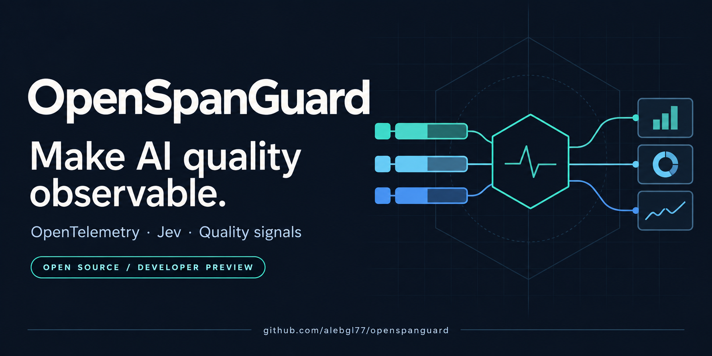
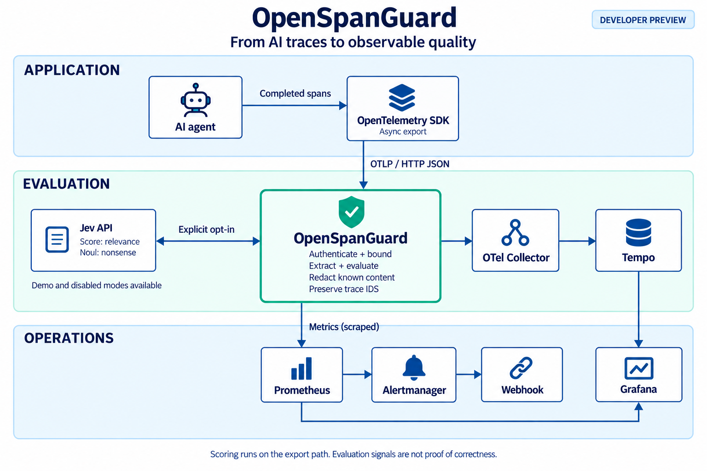
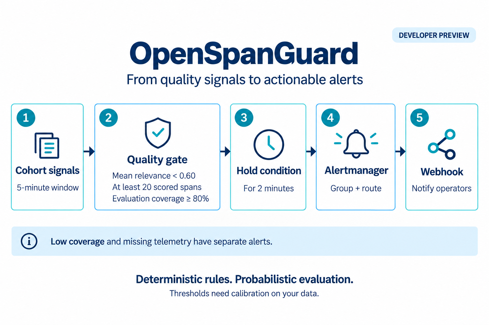

Open source / Developer preview
Make AI quality observable.
Quality signals on your original AI traces. Evaluate completed generation spans, keep their identity, and bring the results into your observability stack.
OTLP/HTTP JSON Node.js 22+ Apache-2.0

01 Preserve trace identity
02 Make coverage visible
03 Calibrate before paging
The architecture
Your traces already tell a story.
Add the quality context.
OpenSpanGuard sits between an OpenTelemetry SDK and your collector. Evaluation happens during export, with the original trace IDs, span IDs, and timestamps preserved.
- 01 / CAPTURE
Finish the generation
Explicitly capture supported prompt and response content. An asynchronous SDK span processor exports completed spans without waiting for scoring on the generation path.
- 02 / ENRICH
Evaluate in the gateway
Eligible spans receive quality signals. Recognized content fields are removed before forwarding. Evaluation and delivery still add export latency.
- 03 / OBSERVE
Use your existing stack
Forward enriched traces to the collector. Prometheus scrapes gateway metrics; Grafana queries Prometheus and Tempo to connect quality with trace context.


Read the architecture as text
An AI agent ends a generation span. Its OpenTelemetry SDK asynchronously sends OTLP/HTTP JSON to OpenSpanGuard. The gateway can call Jev’s score and noul primitives when remote content has been explicitly authorized. It enriches exported spans, removes recognized content fields, and forwards to an OpenTelemetry Collector, which writes to Tempo.
Prometheus pulls the gateway’s metrics. Grafana queries Prometheus for metrics and Tempo for traces. Prometheus sends firing alerts to Alertmanager, which routes them to a webhook.
Raw content is present in incoming telemetry and process memory before redaction. Unrecognized custom fields can retain content. Application-side minimization and operator review are required.
Remote Jev evaluation requires explicit content capture and OSG_ALLOW_REMOTE_CONTENT=true. Review what you send before enabling it. Read the integration guide ↗
Start with evidence
Clone. Run.
Follow a trace.
The offline demo checks the complete export path with synthetic scores and a loopback collector. After dependencies are installed, it needs no API key, Docker, or internet.
- Original IDs and timestamps survive forwarding
- Concurrent replay suppression and missing-content coverage
- Content redaction and streaming event/token handling
- A real OpenTelemetry HTTP/JSON exporter
Look for "result": "pass" in the final JSON.
git clone https://github.com/alebgl77/openspanguard.git
cd openspanguard
npm ci
npm run build
npm run demoBring up the local Collector, Tempo, Prometheus, Grafana, and Alertmanager stack with Docker Compose. Open the deployment guide ↗
The quality loop
A low score is a signal.
Context makes it useful.
The example relevance alert only fires when a cohort has enough evaluations, sufficient coverage, and sustained low mean relevance. The thresholds are starting values to calibrate for your workload.


Read the exact alert conditions
For each cohort, the low-relevance rule requires a 5-minute score-count increase of at least 20, a 5-minute successful-evaluation rate divided by the observed-generation-span rate of at least 0.8, and a score-sum rate divided by score-count rate below 0.6. All three conditions must hold for 2 minutes. Prometheus evaluates this rule group every 15 seconds.
The separate low-coverage rule requires coverage below 0.8 and at least 20 observed spans in 5 minutes, held for 2 minutes. Missing successful-evaluation series are treated as zero for observed cohorts. The informational no-data rule covers an unavailable or missing scrape target, zero span increase over 10 minutes, or a missing span counter, held for 2 minutes; a quiet service can trigger it.
Coverage is part of the result. Missing evaluations do not imply good quality. Coverage records the first observed outcome for each identity within a process-local window. A later retry can succeed without changing coverage for that window.
Scores have limits. Relevance does not prove factual correctness. Evaluator confidence is not truth, and the Jev noul answer is a rubric-specific nonsense probability, not a general hallucination probability. Read measurement limits ↗
Built in the open
A useful preview.
With visible boundaries.
Explore the implementation, reproduce the demo, and validate a canary before relying on these signals in production.
Available today
- OTLP/HTTP JSON enrichment with preserved trace identity
- Synthetic offline evaluation and opt-in remote Jev scoring
- Bounded evaluation queue and process-local deduplication
- Cohort quality, coverage, and export-health metrics
- A local observability stack and example alert rules
Know the boundaries
- JSON only; protobuf export is not supported
- No disk queue or exactly-once delivery guarantee
- Cache expiry, eviction, restarts, or replicas can repeat evaluation
- Known content fields are removed; custom fields need review
- Live Jev accuracy and latency have not been benchmarked
Help shape the next release
Bring your workload.
Make the evidence better.
Reproducible integrations, evaluation feedback, and clear bug reports help turn this preview into a stronger tool.